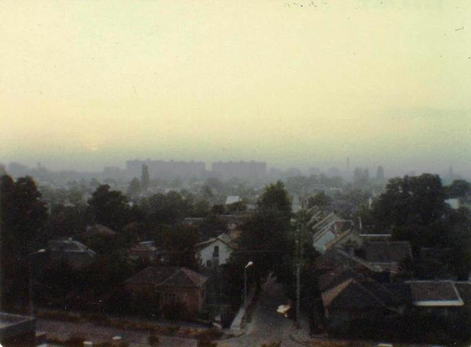

Inter Rail 1984 Day 6
Friday 7th September 1984
Woke up at 7.30am to find myself in the room on my tod. Thought for one awful moment I'd overslept but I hadn't. Quickly got up, washed, packed and headed off for breakfast which I had with Suzanne and the daft Aussie lass. Spent most of breakfast quoting the Goons and telling awful jokes. Left the hostel at about 9.00am.

Bought some rolls for lunch and got to the station in good time to catch the 10.20am train to Budapest. Just as well we got there in plenty of
time as it left early at 9.40am! This meant the train was practically empty. Our carriage had all but 2 seats reserved but no-one had shown up
so we had the window seats. The New Zealand lad we had met in the Hungarian Consulate the day before joined us in the compartment.
The land between Vienna and the Hungarian border is again very flat and arable.The weather kept on changing its mind about what it wanted to do.
Decided to stay in my shorts. The actual Austro/Hungarian border appeared to be a row of iron posts with the tops bent over. About 5 minutes
after passing this, the train stopped in a siding and was surrounded by armed soldiers who made sure no-one could leave the train un-noticed.
After 15 minutes a soldier appeared and asked to see our passports and entry forms whilst a uniformed but non military type checked under the
train to make sure nothing or nobody was attached to the bottom of it. The train thern set off and travelled for another 2 hours before being
stopped in the middle of nowhere.
This time a soldier appeared with a box around his neck. He took the entry forms and stamped them and then the passports. A few minutes later
another of the non military uniformed types, arrived and ordered us out of our compartment. He proceeded to pull the seats up and search
underneath them with a torch. All very silly. By this time the train was crawling with officials. Next up was the ticket collector and the
tourist police guy. The only piece of human behaviour spotted was when one of the soldiers attempted to trip up one of the others. A hint of a
smile crossed both their faces.
As a result of this we were 35 minutes late arriving in Budapest. The countryside leading up to the city was very interesting. Quite hilly.
Within 5 minutes of getting off the train we were accosted by an "Australian citizen" who had a sick wife and was offering to change money.
Decided to stick to the official system for now. Queued for 15 minutes to change money at the official desk (62.95 forints to the £) and
then one and three quarter hours for accommodation.
The system is that you arrange to stay in a private house for an agreed number of nights. Ours was 10 minutes on the express bus from Keleti
Pu station (the number 73E). The flat was on the 6th floor of a 10 storey block. We had the front bedroom, a nice large room with 2 beds and a
couple of chairs. The father of the family spoke no English but somehow managed to tell us the time of the last bus back from the city centre.
We never did find out how to pay for the bus trips. Spent our entire stay riding the buses for free. We headed off into the city centre and
spent 20 minutes walking to the restaurant area. Stopped at a nice looking place where we could sit outside at watch the world go by. One of
the waiters spoke some English so we had some idea of what we were ordering! Had pork done in a lovely spicy tomato sauce with ratatouille,
veg and chips plus a side salad with a great dressing. Together with 2 glasses of beer the entire meal cost 380 forints (£6) for the two
of us.
Caught a number 4 bus and ended up totally lost in a magnificent looking square. Took us a while but we eventually found the stop from which
we could catch the 73E back to our digs. Found that there was one slight problem with the beds being laid end to end. Jon's feet stuck out
into my bed. Was mega tired so fell asleep almost immediately.
Notes
- Apart from the language (and thus the signs) which is totally unguessable plus the lack of variety in the cars (Lada's and Skoda's
rule OK), we could have been in a Western city. No shortage of denim or neon lights here.